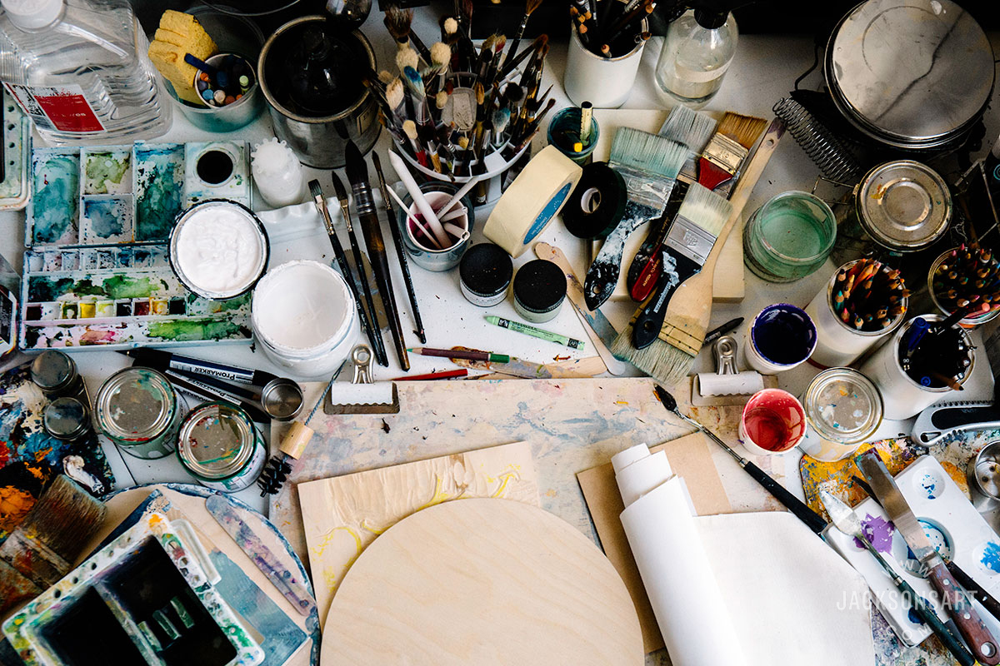

Learn the different mediums used for art!
The Art of Creation

To do some easy sketches, a pencil, pen, crayon or marker can be used on a piece of paper to draw!
If you want to color in the sketches, now drawings, markers crayon, or colored pencils will work.
Grab a canvas some brushes and acrylic paint.
This is how you start a painting, with a sketch or no sketch!
To get a feel for clay, getting air dry clay is perfect! This requires no kiln for it to be hardened,
leaving it out for a couple hours will complete that step.
These are just some mediums beginners will have a fun time using, or for some small crafts!

When you think of art mediums you may think of drawing
with a writing utensil, or painting with acrylics or watercolor!
These are just some mediums beginners will have a fun time using, or for some small crafts!
When you think of art mediums you may think of drawing with a writing utensil, or painting with acrylics or watercolor!